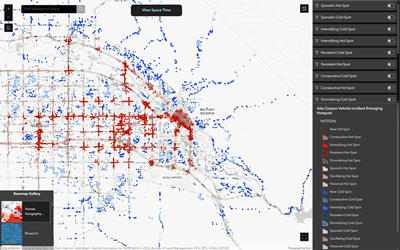

Motor Vehicle Crash Emerging Hotspots | Boise Metro Area

I’ve been fascinated with ArcGIS Pro’s space-time cube and its statistical analysis capabilities. To explore this further, I analyzed motor vehicle crash data from the Idaho Transportation Department. Focusing on the Boise Metropolitan Area, I created a space-time cube and conducted an emerging hotspot analysis. This analysis is more meaningful on a local scale due to the uneven distribution of roads in rural and urban areas. Below is an outline of my methodology and documentation of this analysis.
STEP 1: Analyze Data | Geographic and Temporal
A space time analysis requires some pre-review in effort to avoid bias. In effort to better understand the data I asked myself the following questions:
- How is the data geographically distributed? - This data displays the geographic point location of incidents. Incidents occur on roadways and are more frequent in urban areas.
- How is the data temporally distributed? - To understand this, I used ArcGIS Pro's visualize statistics tool.
- There is a notable drop-off in incidents from July 2012 to December 2012. This is likely due to incomplete data rather than an actual improvement in safe driving. Therefore, 2012 will be excluded from the analysis.
- Additionally, there is a slight decrease in data from March 2020 to May 2020. While it appears significant, it may not be substantial enough to skew the overall results.
- Lastly, the last recorded incident is in September 2023. Since data for the remaining months of 2023 are not included, 2023 will be excluded from the analysis.
- A calendar heat chart will also provide some insights to temporal bias. The chart below shows the data for 2005 which allows us to visualize any drops/gaps in the data.
STEP 2: Subset Data | Geographic and Temporal
- I subsetted the data to Canyon and Ada counties to obtain more accurate results. METHOD: Select by Location where data INTERSECTS Canyon/Ada counties.
- Using Select by Attributes, I deleted the years which had missing data.
STEP 3: Create Space Time Cube By Aggregating Points | Parameters
- Time Step Interval | Using 1-month intervals allows each bin to have enough data to be statistically significant. Seasonal patterns are captured but may not be fully modeled. Overall, it provides sufficient data granularity, balancing between too much or too little data.
- Distance Interval | 330 feet is the estimated average length of a street block. By using 330 feet, I aim to capture all accidents occurring within a single street block.
STEP 4: Space Time Cube Explorer
The Space time Cube Explorer add-in enhances the way you can interact with the space-time cube. It streamlines the creation process with preset symbology and sliders.
STEP 5: Emerging Hot Spot Analysis | Parameters
- After trial and error, the k nearest neighbors conceptualization appeared to be the best choice. In rural areas, some features (incidents) occured futher away from other areas. K nearest neighbors ensured that some of these features had a minimum number of neighbors.
- Using the Average Nearest Neighbor tool, I gathered that my data had a significant amount of clustering: Z score was a large negative number, p-value = 0.
- Number of Spatial Neighbors = 15 | Using 15 spatial neighbors helped improve the analysis by providing a robust sample size for each point, ensuring that even in sparsely populated rural areas, each incident had enough neighboring data points to generate meaningful and reliable results. This balance between having too few and too many neighbors helped to capture local variations while maintaining statistical significance.
- Neighborhood Time Step = 48 | This ensures that the previous 4 years of data are included as neighbors.
STEP 6: Results Discussion
My analysis results show that highly trafficked areas consistently emerge as hotspots, while more rural areas experience sporadic incidents. By displaying these patterns, we can deduce that the model is accurately reflecting the spatial and temporal distribution of incidents. This validation supports the reliability of our hotspot analysis in identifying significant trends and areas of concern.